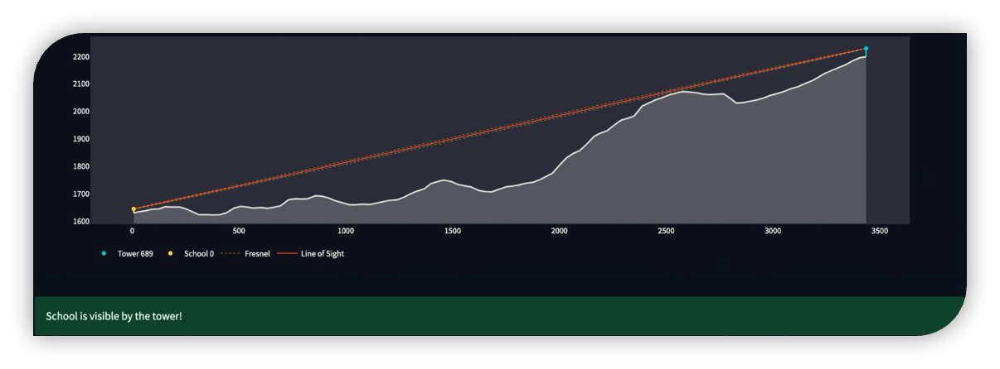
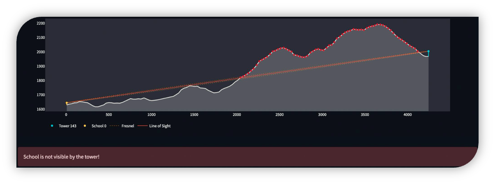

Visibility
Overview
The Visibility module provides tools to analyze line-of-sight connectivity between different infrastructure components. It determines whether points of interest (POIs) have clear line-of-sight with cell sites or with other POIs, accounting for terrain elevation, Earth's curvature, and antenna heights. Line-of-sight is required to establish the feasibility of radio links between points of interest (POIs) and cell sites using visibility analysis. The analysis uses open topography data from the Shuttle Radar Topography Mission (SRTM), which provides 30-meter resolution elevation data.
Figure: Visible cell site

Figure: Obstructed cell site

Key Features:
- Line-of-sight analysis between points considering terrain elevation (SRTM data)
- Earth curvature and atmospheric refraction modeling
- Configurable search radius and antenna heights
- Support for different cellular radio types (2G, 3G, 4G, 5G)
- Detailed results including visibility status, distances, and azimuth angles
Base Class: Visibility
The Visibility class serves as the foundation for visibility analyses.
Class Parameters
| Parameter | Type | Default | Description |
|---|---|---|---|
| points_of_interest | PointOfInterestCollection |
Required | Collection of points of interest |
| cell_sites | CellSiteCollection |
None | Collection of cell sites |
| srtm_data_handler | SRTMDataHandler |
None | Handler for SRTM elevation data |
| search_radius | int |
35 | Maximum distance (km) to search for visibility |
| num_visible | int |
3 | Number of visible sites/POIs to find |
| poi_antenna_height | float |
15 | Antenna height at POI locations (meters) |
| allowed_radio_types | list |
['unknown', '2G', '3G', '4G', '5G'] | Radio types to include |
| earth_radius | float |
6371 | Earth radius in kilometers |
| refraction_coef | float |
0 | Atmospheric refraction coefficient |
| use_srtm | bool | True |
Whether to use SRTM elevation data |
| logger | Logger | None |
Logger instance |
Class Attributes
| Attribute | Type | Description |
|---|---|---|
| points_of_interest | PointOfInterestCollection |
Collection of points of interest |
| cell_sites | CellSiteCollection |
Collection of cell sites |
| srtm_data_handler | SRTMDataHandler |
Handler for SRTM elevation data |
| search_radius | int |
Maximum search distance in meters |
| analysis_param | dict |
Parameters used for the analysis |
| analysis_stats | dict |
Statistics about the analysis run |
| logger | Logger |
Logger instance for the class |
Methods
| Method | Return Type | Description |
|---|---|---|
| retrieve_srtm_data_files() | None |
Downloads required SRTM elevation data |
| get_antenna_height(point) | float |
Gets antenna height for a point |
| check_visibility(source, target, use_srtm, srtm_collection, search_radius) | tuple |
Determines if target is visible from source considering terrain |
VisibilityCell: Cell Sites Visible from POIs
Class Attributes
| Attribute | Type | Description |
|---|---|---|
| analysis_results | dict |
Dictionary storing analysis results per POI |
| analysis_stats | dict |
Statistics about the analysis run |
| analysis_param | dict |
Parameters used for the analysis |
Methods
| Method | Return Type | Description |
|---|---|---|
| perform_analysis() | None |
Executes visibility analysis, finding visible cell sites for each POI |
| get_results_table() | DataFrame |
Returns formatted results with detailed visibility information |
| get_storage_table() | DataFrame |
Returns raw analysis results as a DataFrame |
| format_analysis_summary() | str |
Returns a human-readable summary of analysis statistics |
| retrieve_srtm_data_files() | None |
Downloads required SRTM elevation data |
| check_visibility() | tuple |
Determines if target is visible from source considering terrain |
VisibilityPOI: Points of Interest Visible to Each Other
Class Attributes
| Attribute | Type | Description |
|---|---|---|
| analysis_results | DataFrame |
DataFrame storing source-target pairs with visibility status |
Methods
| Method | Return Type | Description |
|---|---|---|
| perform_analysis() | None |
Computes visibility between all pairs of POIs |
| get_results_table() | DataFrame |
Returns a symmetrically formatted visibility graph |
| retrieve_srtm_data_files() | None |
Downloads required SRTM elevation data |
| check_visibility() | tuple |
Determines if target is visible from source considering terrain |
Example
import pandas as pd
from giga_inframapkit.entities.pointofinterest import PointOfInterestCollection
from giga_inframapkit.entities.cellsite import CellSiteCollection
from giga_inframapkit.handlers.srtmdatahandler import SRTMDataHandler
from giga_inframapkit.visibility.visibility import VisibilityCell, VisibilityPOI
# 1. Set up your data collections
poi_df = pd.read_csv("input/points_of_interest.csv")
poi_collection = PointOfInterestCollection()
poi_collection.load_from_records(poi_df.to_dict('records'))
# PointOfInterestCollection: 104 entities
cell_site_df = pd.read_csv("input/cell_sites.csv")
cell_site_collection = CellSiteCollection()
cell_site_collection.load_from_records(cell_site_df.to_dict('records'))
# CellSiteCollection: 34 entities
# 2. Set up the elevation data handler, that downloads a raster file with elevation data into the data_dir
srtm_data_handler = SRTMDataHandler(srtm_directory=f'/input/srtm1', logger=None)
# 3. Perform POI to cell site visibility
visibility_cellsites = VisibilityCell(
points_of_interest=poi_collection,
cell_sites=cell_site_collection,
srtm_data_handler=srtm_data_handler,
search_radius=35,
num_visible=3,
poi_antenna_height=25,
allowed_radio_types=["4G", "5G"],
earth_radius=6371,
refraction_coef=0,
logger=None
)
visibility_cellsites.perform_analysis()
# INFO:visibility_STP:Locating SRTM data files...
# INFO:visibility_STP:0 data file(s) to download.
# INFO:visibility_STP:Downloading SRTM data files...
# INFO:visibility_STP:Fetching from ITU public storage
# INFO:visibility_STP:Filelist specified, downloading only selected files
# INFO:visibility_STP:Downloaded completed
# INFO:visibility_STP:Using 8 processes for parallel computation
# INFO:visibility_STP:Processing 104 points of interest
# INFO:visibility_STP:Checking cell site visibility: 0%| | 0/104 [00:00<?, ?it/s]
# INFO:visibility_STP:Checking cell site visibility: 1%| | 1/104 [00:02<03:46, 2.20s/it]
# INFO:visibility_STP:Checking cell site visibility: 18%|#8 | 19/104 [00:02<00:08, 9.85it/s]
# INFO:visibility_STP:Checking cell site visibility: 36%|###5 | 37/104 [00:02<00:03, 19.56it/s]
# INFO:visibility_STP:Checking cell site visibility: 100%|##########| 104/104 [00:02<00:00, 35.79it/s]
# Visibility Analysis Summary:
# Number of points of interest: 104
# Number of cell sites: 34
# Total visibility checks performed: 1803
# Average visibility checks per point of interest: 17.34
# Time taken for SRTM data download: 0.11 seconds
# Time taken for analysis: 3.0 seconds
# Total time elapsed: 3.11 seconds
cellsites_results_table = visibility_cellsites.get_results_table()
cellsites_results_table.head()
# poi_id ict_id radio_type ground_distance antenna_los_distance azimuth_angle geometry is_visible num_visible order
# 0 be6dc17a-57df-4709-bff1-18f433f7df71 4381fb37-07f8-465a-a654-6bc8df169be0 4G 269 269 211.41 LINESTRING (6.7332108 0.3300316, 6.73195 0.327... True 3 1
# 1 be6dc17a-57df-4709-bff1-18f433f7df71 7c4d5ac9-c381-485e-9c3f-99fbb062c837 4G 815 815 353.02 LINESTRING (6.7332108 0.3300316, 6.732319444 0... True 3 2
# 2 be6dc17a-57df-4709-bff1-18f433f7df71 cb6229b5-b934-4d5f-a7c1-39f33e1b1d6f 4G 881 881 77.87 LINESTRING (6.7332108 0.3300316, 6.740961111 0... True 3 3
# 3 7f4bf645-3665-4658-9913-edcb3fba3b2d 226b6f88-aac8-41af-8c88-6fd30b561afa 4G 683 683 21.55 LINESTRING (6.7235979 0.3330804, 6.725855556 0... True 3 1
# 4 7f4bf645-3665-4658-9913-edcb3fba3b2d b4fbe775-c7e9-4752-b21c-883b84ea08ad 4G 867 869 257.62 LINESTRING (6.7235979 0.3330804, 6.715980556 0... True 3 2
# 4. Perform POI to POI visibility
visibility_pois = VisibilityPOI(
points_of_interest=poi_collection,
cell_sites=cell_site_collection,
srtm_data_handler = srtm_data_handler,
search_radius = 35,
poi_antenna_height = 25,
earth_radius = 6371,
refraction_coef = 0,
logger = None
)
visibility_pois.perform_analysis()
# INFO:visibility_STP:Locating SRTM data files...
# INFO:visibility_STP:0 data file(s) to download.
# INFO:visibility_STP:Downloading SRTM data files...
# INFO:visibility_STP:Fetching from ITU public storage
# INFO:visibility_STP:Filelist specified, downloading only selected files
# INFO:visibility_STP:Downloaded completed
# INFO:visibility_STP:Using 8 processes for parallel computation
# INFO:visibility_STP:Processing 5356 POI pairs
# INFO:visibility_STP:Checking POI-to-POI visibility: 0%| | 0/5356 [00:00<?, ?it/s]
# INFO:visibility_STP:Checking POI-to-POI visibility: 0%| | 1/5356 [00:03<4:55:26, 3.31s/it]
# INFO:visibility_STP:Checking POI-to-POI visibility: 6%|6 | 335/5356 [00:03<00:37, 135.50it/s]
# INFO:visibility_STP:Checking POI-to-POI visibility: 19%|#8 | 1003/5356 [00:03<00:10, 417.91it/s]
# INFO:visibility_STP:Checking POI-to-POI visibility: 50%|####9 | 2673/5356 [00:05<00:03, 842.69it/s]
# INFO:visibility_STP:Checking POI-to-POI visibility: 56%|#####6 | 3007/5356 [00:05<00:02, 903.04it/s]
# INFO:visibility_STP:Checking POI-to-POI visibility: 100%|##########| 5356/5356 [00:05<00:00, 999.95it/s]
# INFO:visibility_STP:Analysis completed in 5.57 seconds
pois_results_table = visibility_pois.get_results_table()
pois_results_table.head()
# poi_id visible_pois is_visible_pois
# 0 09b90515-0ecc-4992-9d39-ae208e1c1fea [1d24a1c9-9d48-4ea0-9aa3-cfdb65d228a1] True
# 1 0c16c2e8-db92-411b-a6f7-535fb1810e34 [967c9f47-5162-4f1b-aaa2-a7d77279d40c, 1e83e05... True
# 2 1205e5ef-5d91-47b7-8fc0-11ef019263e5 [c77898fa-9377-4552-b2a1-c719f3257dbf, 76d2158... True
# 3 1534adf8-b45c-443b-8e1d-87a504e6dc64 [82e467a9-50d8-407f-aa3a-58b68297b55b, 6dda061... True
# 4 192c1704-9e7e-4b7a-8ba7-0eed5ae771ad [26ac2dc1-98e0-4ce7-8c1f-c6935b90ecc4, aeb454b... True